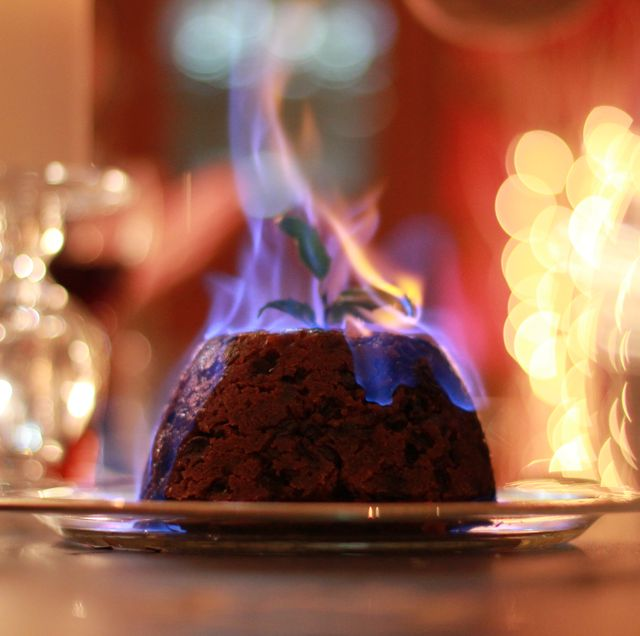

Magical Flaming Pudding

Description:
Magical Flaming Pudding is one of the many whimsical dishes that won over
the hearts and grumbling stomachs of readers across the world since
Harry Potter and The Sorcerer's Stone found a home on their
bookshelves. True to fandom fashion and the devotion to creating mystical
moments in the day to day, this boozy flambéed desert will delight
any guest who has the joy of dining at your table.
Serves: 8 - 10
Ingredients:
For the pudding:
- 45g all-purpose flour
- 1/8 tsp ground ginger
- 1/8 tsp ground nutmeg
- 1/8 tsp mixed cardamom and allspice
- 1 small lemon
- 1/4 tsp salt
- 115g fresh breadcrumbs
- 115g unsalted butter
- 140g chopped tart apples
- 30g golden raisins
- 90g chopped almonds
- 60g candied citrus peel
- 60g pitted prunes
- 115g raisins
- 115g brown sugar
- 2 large eggs
- 3 tbsp brandy, plus more for the flambée
- 1/4 cup stout
- Hard sauce, for serving (see below)
For the hard sauce/brandy butter:
- 115g unsalted butter, slightly softened
- 115g confectioners' sugar
- 3 tbsp brandy
Directions
For the pudding:
-
Butter the pudding dish liberally and press a round of parchment paper
into the bottom and slightly up the sides of the dish
-
Mix the flour, nutmeg, ginger, mixed cardomom and allspice, and salt in
a large mixing bowl. Zest the lemon directly over the bowl. Add
breadcrumbs, butter, apples, raisins, almonds, candied peel, prunes, and
brown sugar. Mix thoroughly with your hands. Cover the bowl and let the
mixture rest overnight.
-
Juice half of the lemon into a medium bowl. Whisk in the eggs, brandy,
and stout.
-
Add the egg mixture to the rested dry ingregients and mix thoroughly to
a sticky, lumpy batter
-
Turn the batter into the prepared pudding dish and pat it level.Place a
round of parchment paper on top of the batter. Cover the bowl with foil,
pressing down the sides. Tie a piece of string under the rim of the bowl
to hold the foil in place.
-
Place the pudding dish in a large bain marie and fill the bain marie
with water to halfway up the sides of the pudding dish
-
Cover and steam for 8 hours. Let cool and store in the fridge. Steam
another 1 hour before serving. Should be served hot.
For the hard sauce/brandy butter:
-
Mix the butter and confectioners sugar together until blended. Gradually
mix in the brandy. If the mixture begins to curdle, mix in a little more
confectioners sugar or 1 to 2 tbsp of boiling water. Refrigerate until
serving.
To serve:
-
Unmold the pudding onto a warmed serving platter after you finish the
second steaming. Peel and discard the paper liner.
- Warm 2 to 3 tbps of brandy in a small saucepan.
- Turn off the lights in the dining room
-
Set the brandy on fire with a candle lighter and pour it over the
pudding before presenting the dish to your guests
-
Listen to all the sounds of amazement from your guests. After everyone
has had a moment to take it in, Smother the flames with a cloche or fan
the flames out.
- Drizzle the hard sauce over the pudding and enjoy!